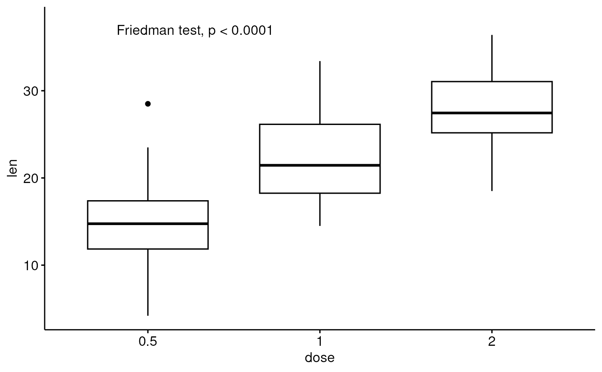
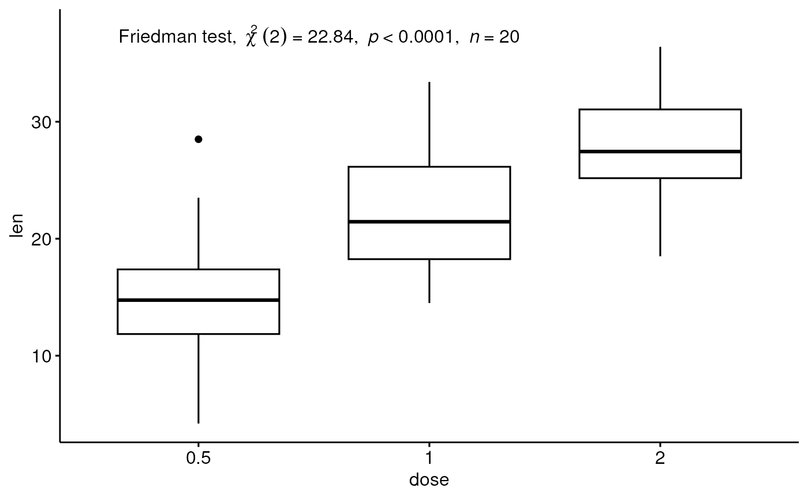
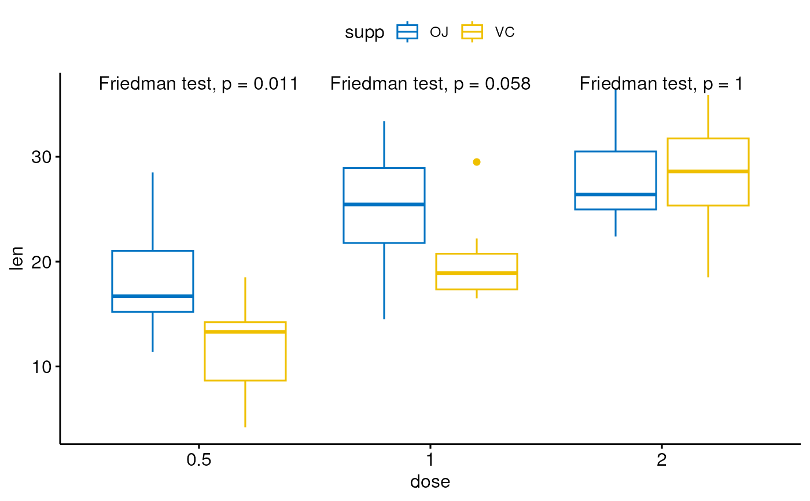

Add automatically Friedman test p-values to a ggplot, such as box blots, dot plots and stripcharts.
stat_friedman_test(
mapping = NULL,
data = NULL,
wid = NULL,
group.by = NULL,
label = "{method}, p = {p.format}",
label.x.npc = "left",
label.y.npc = "top",
label.x = NULL,
label.y = NULL,
step.increase = 0.1,
p.adjust.method = "holm",
significance = list(),
geom = "text",
position = "identity",
na.rm = FALSE,
show.legend = FALSE,
inherit.aes = TRUE,
parse = FALSE,
...
)Set of aesthetic mappings created by aes(). If specified and
inherit.aes = TRUE (the default), it is combined with the default mapping
at the top level of the plot. You must supply mapping if there is no plot
mapping.
The data to be displayed in this layer. There are three options:
If NULL, the default, the data is inherited from the plot
data as specified in the call to ggplot().
A data.frame, or other object, will override the plot
data. All objects will be fortified to produce a data frame. See
fortify() for which variables will be created.
A function will be called with a single argument,
the plot data. The return value must be a data.frame, and
will be used as the layer data. A function can be created
from a formula (e.g. ~ head(.x, 10)).
(factor) column name containing individuals/subjects identifier.
Should be unique per individual. Required only for repeated measure tests
("one_way_repeated", "two_way_repeated", "friedman_test", etc).
(optional) character vector specifying the grouping variable; it should be used only for grouped plots. Possible values are :
"x.var": Group by the x-axis variable and perform the test
between legend groups. In other words, the p-value is compute between legend
groups at each x position
"legend.var": Group by the legend
variable and perform the test between x-axis groups. In other words, the
test is performed between the x-groups for each legend level.
the column containing the label (e.g.: label = "p" or label =
"p.adj"), where p is the p-value. Can be also an expression that can
be formatted by the glue() package. For example, when
specifying label = "t-test, p = {p}", the expression {p} will be
replaced by its value.
can be numeric or character
vector of the same length as the number of groups and/or panels. If too
short they will be recycled.
If numeric, value should
be between 0 and 1. Coordinates to be used for positioning the label,
expressed in "normalized parent coordinates".
If character,
allowed values include: i) one of c('right', 'left', 'center', 'centre',
'middle') for x-axis; ii) and one of c( 'bottom', 'top', 'center', 'centre',
'middle') for y-axis.
numeric Coordinates (in data units) to be used
for absolute positioning of the label. If too short they will be recycled.
numeric vector with the increase in fraction of total height for every additional comparison to minimize overlap.
method for adjusting p values (see
p.adjust). Has impact only in a situation, where
multiple pairwise tests are performed; or when there are multiple grouping
variables. Allowed values include "holm", "hochberg", "hommel",
"bonferroni", "BH", "BY", "fdr", "none". If you don't want to adjust the p
value (not recommended), use p.adjust.method = "none".
a list of arguments specifying the signifcance cutpoints
and symbols. For example, significance <- list(cutpoints = c(0,
0.0001, 0.001, 0.01, 0.05, Inf), symbols = c("****", "***", "**", "*",
"ns")).
In other words, we use the following convention for symbols indicating statistical significance:
ns: p > 0.05
*: p <= 0.05
**: p <= 0.01
***: p <= 0.001
****: p <= 0.0001
The geometric object to use to display the data, either as a
ggproto Geom subclass or as a string naming the geom stripped of the
geom_ prefix (e.g. "point" rather than "geom_point")
Position adjustment, either as a string naming the adjustment
(e.g. "jitter" to use position_jitter), or the result of a call to a
position adjustment function. Use the latter if you need to change the
settings of the adjustment.
If FALSE (the default), removes missing values with a warning. If TRUE silently removes missing values.
logical. Should this layer be included in the legends?
NA, the default, includes if any aesthetics are mapped.
FALSE never includes, and TRUE always includes.
It can also be a named logical vector to finely select the aesthetics to
display.
If FALSE, overrides the default aesthetics,
rather than combining with them. This is most useful for helper functions
that define both data and aesthetics and shouldn't inherit behaviour from
the default plot specification, e.g. borders().
If TRUE, the labels will be parsed into expressions and displayed
as described in ?plotmath.
other arguments passed to the function geom_bracket() or
geom_text()
statistic: the value of the test statistic (Chi-squared).
df: the degrees of freedom of the approximate chi-squared distribution of the test statistic.
p: p-value.
p.adj: Adjusted p-values.
p.signif: P-value significance.
p.adj.signif: Adjusted p-value significance.
p.format: Formated p-value.
p.adj.format: Formated adjusted p-value.
n: number of samples.
# Data preparation
#%%%%%%%%%%%%%%%%%%%%%%%%%%%%%%%%%%%%%%%%%
# Transform `dose` into factor variable
df <- ToothGrowth
df$dose <- as.factor(df$dose)
df$id <- as.factor(c(rep(1:10, 3), rep(11:20, 3)))
# Add a random grouping variable
set.seed(123)
df$group <- sample(factor(rep(c("grp1", "grp2", "grp3"), 20)))
df$len <- ifelse(df$group == "grp2", df$len+2, df$len)
df$len <- ifelse(df$group == "grp3", df$len+7, df$len)
head(df, 3)
#> len supp dose id group
#> 1 4.2 VC 0.5 1 grp1
#> 2 18.5 VC 0.5 2 grp3
#> 3 14.3 VC 0.5 3 grp3
# Basic boxplot
#%%%%%%%%%%%%%%%%%%%%%%%%%%%%%%%%%%%%%%%%%
# Create a basic boxplot
# Add 5% and 10% space to the plot bottom and the top, respectively
bxp <- ggboxplot(df, x = "dose", y = "len") +
scale_y_continuous(expand = expansion(mult = c(0.05, 0.1)))
# Add the p-value to the boxplot
bxp + stat_friedman_test(aes(wid = id))

# Change the label position
# Using coordinates in data units
bxp + stat_friedman_test(aes(wid = id), label.x = "1", label.y = 10, hjust = 0)
# Format the p-value differently
custom_p_format <- function(p) {
rstatix::p_format(p, accuracy = 0.0001, digits = 3, leading.zero = FALSE)
}
bxp + stat_friedman_test(
aes(wid = id),
label = "Friedman test, italic(p) = {custom_p_format(p)}{p.signif}"
)
#> Warning: Computation failed in `stat_compare_multiple_means()`
#> Caused by error in `mutate()`:
#> ! Problem while computing `label = glue(label)`.
#> Caused by error in `custom_p_format()`:
#> ! could not find function "custom_p_format"
# Show a detailed label in italic
bxp + stat_friedman_test(aes(wid = id), label = "as_detailed_italic")

# Faceted plots
#%%%%%%%%%%%%%%%%%%%%%%%%%%%%%%%%%%%%%%%%%
# Create a ggplot facet
df$id <- rep(1:10,6)
bxp <- ggboxplot(df, x = "dose", y = "len", facet.by = "supp") +
scale_y_continuous(expand = expansion(mult = c(0.05, 0.1)))
# Add p-values
bxp + stat_friedman_test(aes(wid = id))
# Grouped plots
#%%%%%%%%%%%%%%%%%%%%%%%%%%%%%%%%%%%%%%%%%
df$id <- rep(1:10,6)
bxp <- ggboxplot(df, x = "dose", y = "len", color = "supp", palette = "jco")
# For each legend group, computes tests within x variable groups
bxp + stat_friedman_test(aes(wid = id, group = supp, color = supp), within = "x")
#> Warning: Ignoring unknown parameters: `within`

# For each x-position, computes tests within legend variable groups
bxp + stat_friedman_test(
aes(wid = id, group = supp, color = supp),
within = "group", label = "p = {p.format}"
)
#> Warning: Ignoring unknown parameters: `within`